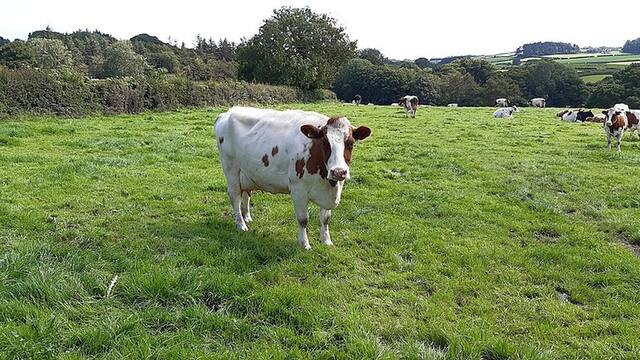
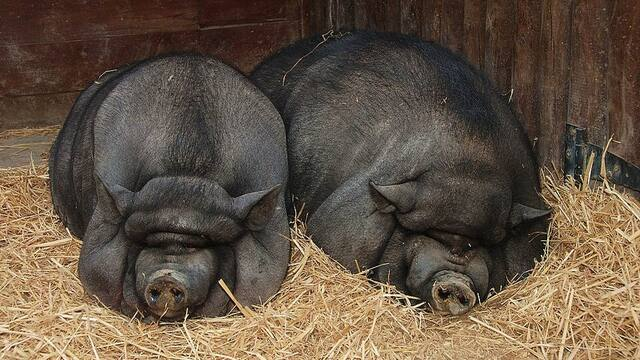

I · Consent
They never agreed to this.
No animal consents to being bred, confined, mutilated or killed for our preferences.

If you don’t need to use animals, why do it at all?
animals killed for food, clothing,
entertainment & testing
Olympic medals, world records and professional bodybuilding—achieved by people who compete on plant-based diets. Check the dates and original sources.
No animal consents to being bred, confined, mutilated or killed for our preferences.

They form bonds, seek safety, avoid pain and fight to stay alive. Convenience does not erase their experience.

Having the power to use and kill another living being does not make doing it morally right.
Pick the excuse you use to justify animal exploitation. Then face what it actually means.
Every time we eat animals, we support the greatest oppression in history.
— Dr. Alex Hershaft, Holocaust survivor and animal-rights pioneer
Read the source on Alex Hershaft’s official website ↗Knowledge removes the excuse. Your next purchase either funds animal use or refuses it.
Stop funding animal use in food, clothing, entertainment and testing. Begin with clear, practical guidance.
Learn how ↗Get a free 22-day program with mentors, dietitian support, daily guidance and recipes.
Join Challenge 22 ↗Read The Vegan Society’s practical guidance on why and how to make the change.
Visit The Vegan Society ↗Browse more than 150 budget-friendly vegan recipes with clear instructions.
Browse Budget Bytes ↗A well-planned vegan diet can support health at every stage of life. Planning matters—especially reliable vitamin B12—so use the Nutrition section and qualified medical guidance for your needs.
Veganism is about avoiding animal exploitation as far as possible and practicable. A genuine limitation is not a license to ignore every choice that remains available.
Markets respond to accumulated choices, but this is also about refusing your own participation. You cannot control everyone; you can control what you knowingly support.
Questioning avoidable confinement, mutilation and killing is not the extreme position. The scale and normality of the harm can make ordinary compassion feel radical.
Wild predators act from biological necessity and cannot weigh ethical alternatives. Our choices are not justified by what another species must do to survive.
Different communities face different histories, resources and constraints. Their circumstances do not justify avoidable animal use by people who have accessible alternatives.
Prepare one calm sentence, bring food you can eat and connect with supportive vegans. Challenge 22 offers free community and mentor support.
Veganism addresses animal use, not only food. Honey, wool and leather turn animals and their bodies into products when non-animal alternatives are available.
Go Vegan connects the reason to the action. Find affordable meals, replace familiar products, check ingredients, plan your nutrition and move at a pace you can sustain.
Find plant-based dietitians, free guided support, and clear answers about B12.
Start with the question in front of you. Go Vegan will take you to the right tool.
“They don’t have a voice, but we do. They don’t have a choice, but we do.”
You do not have to become perfect overnight. You only have to stop looking away and take the next honest step.
Find vegan alternatives for the food and products you already love.

Pick a category that feels easy to begin with.
Creamy, classic, and part of so many moments.
Same comfort, made from plants.
Eating vegan doesn't have to be expensive.
Start with our beginner-friendly resources.
Progress, not perfection. You're doing something good.
Find products, whole-food swaps, homemade alternatives, and beyond.
Dietary tags describe listed ingredients only and do not guarantee freedom from manufacturing cross-contact. Verify current packaging when allergies are involved.
Delicious plant‑based meals for every occasion.
Explore vegan holidays, animal rights campaigns, and related awareness days throughout the year.
Choose a day to see its observances and advocacy resources.
No observances match your search. Try a different month or category.
Not every awareness day is a vegan holiday. Categories distinguish direct vegan and animal-rights observances from related animal welfare and environmental awareness. Organizer-set dates may change; check the source before planning an event.
Your purchases are not abstract. They create demand for animals to be bred, confined and killed. These are the latest complete official counts available, with their limits stated plainly.
FAO production data record more than 86 billion cattle, goats, chickens, turkeys, pigs, sheep and ducks slaughtered for meat worldwide in 2024.
This is a production count, not a complete count of animal deaths. It excludes fish and other aquatic animals and does not capture additional deaths associated with dairy or egg production.
Start with the annual FAO land-animal slaughter total shown above and divide it by the number of seconds in a year (365.25 × 24 × 60 × 60). It is an annual average, not a claim that exactly 2,736 animals are killed during every literal second.
At least 10.06 billion chickens, turkeys, ducks, cattle, calves, hogs, sheep, lambs, goats and bison. Poultry figures are federally inspected; livestock figures are commercial slaughter. This still excludes fish and other aquatic animals.
The 86.3-billion counter is intentionally land animals only. Peer-reviewed estimates put farmed finfish killed for food at about 124 billion in 2019 (78–171 billion range), while wild-caught finfish averaged roughly 1.1–2.2 trillion per year during 2000–2019. Fish are kept separate because these figures are estimated from biomass rather than direct global head counts.
A 2023 Nature Food study compared observed UK diets using life-cycle data from more than 38,000 farms in 119 countries. Below, vegan diets are shown relative to high-meat diets (≥100 g meat/day), with high-meat diets set to 100%.
They are comparative dietary footprints, not a promise that one person will reduce each impact by exactly that amount. Food origin and production methods vary substantially. Water-use and biodiversity estimates also carry wider uncertainty than greenhouse gases, land use and eutrophication.
This is a transparent comparison, not a claim that we can measure your exact personal savings. It applies the study’s vegan-versus-high-meat ratios across the time period you choose.
For each metric below, the dark bar represents a high-meat diet baseline. The green portion shows the estimated vegan-diet footprint from the study; the remainder is the comparative difference.
of high-meat-baseline footprint difference across this period.
The study reports vegan dietary footprints as a percentage of high-meat diets standardized to 2,000 kcal/day. Go Vegan multiplies that relative difference by the selected number of days. “Baseline-footprint days” are a visualization unit, not literal days added to your life and not a measurement of your individual emissions, water, land or biodiversity impact.
Explore source-backed comparisons for greenhouse gases, land, water, eutrophication and biodiversity pressure above.
Planet metrics addedCompare day, week, month, year and five-year horizons using the study’s relative dietary footprints and visible uncertainty.
Interactive comparison addedSearch common questions about veganism using claim-specific scientific evidence. Empirical claims must be supported by relevant peer-reviewed research; uncertainty and conflicting findings are shown rather than hidden.
Scientific standard: a real citation is not enough—the cited research must actually support the claim. Ethical arguments are labeled as philosophy rather than presented as scientific findings. Open the full library for methodology, limitations and sources.
Try a shorter search or choose another category.
A practice being legal, traditional, profitable, familiar, or socially accepted does not by itself tell us whether it is ethical.
History gives us many examples of practices that were defended or tolerated within their societies and later condemned, restricted, or abolished.
Enslavement was embedded in law and major economic systems for generations. Its historical acceptance did not make ownership of human beings morally defensible.
Library of Congress ↗Industrial child labor placed large numbers of children in factories, mills, mines, and street work. Reform came despite arguments involving family income, industry, and established practice.
Library of Congress ↗Federal Indian boarding schools separated Native children from families and sought to suppress languages, religions, names, clothing, and cultural practices, often through coercion and punishment.
National Park Service ↗The U.S. Public Health Service study at Tuskegee continued for decades without informed consent and without offering appropriate treatment even after effective treatment was available. Its exposure helped drive research-ethics reform.
National Library of Medicine ↗Eugenic movements classified people as biologically or socially "unfit" and promoted compulsory sterilization. Such ideas influenced policy in multiple countries and were taken to horrific extremes by Nazi Germany.
U.S. Holocaust Memorial Museum ↗Late nineteenth and early twentieth century exhibitions displayed people described as "primitive" before paying audiences. Historians caution that these exhibitions varied, but they were closely tied to colonialism, racism, and exoticization.
Peer-reviewed history ↗For centuries, some boys were castrated before puberty so their voices would remain high into adulthood. A small number became celebrated singers, while the bodily alteration itself served religious and artistic institutions rather than the child's medical needs.
Peer-reviewed history ↗Compelled labor has repeatedly been justified by states and private interests. International standards now recognize forced labor as a fundamental rights violation, although it continues today.
International Labour Organization ↗No single mechanism explains every historical case, but the same kinds of defenses appear repeatedly.
The historical lesson is not that every accepted practice is secretly evil. It is that acceptance alone cannot settle the moral question.
When a sentient animal can experience pain, fear, distress, confinement, separation, or death, what justifies imposing those harms?
If a practice is defended primarily by taste, convenience, tradition, legality, or profit, ask whether those reasons are sufficient when practical alternatives are available.Normal does not mean moral. Sometimes normal is simply what a society has become accustomed to no longer questioning.
Learn where products come from. Look beyond packaging and familiar terminology. Question what you were taught was inevitable. Then decide what you are willing to participate in when another option is reasonably available.
Go deeper with documentaries, books, talks, podcasts, organizations and evidence-based references.
External resources are included for education, not blanket endorsement. Availability and content can change; health material does not replace individualized medical advice.
Learn about the animals behind everyday products and discover compassionate alternatives.
No animals found matching your criteria.
No favorites yet.
Discover common household products that may contain animal-derived materials, and find vegan alternatives.
Browse animal-derived ingredients and their vegan alternatives.
Olympic medalists, strength athletes, bodybuilders and endurance champions demonstrate what can be achieved without eating animals. Explore their records and when they adopted vegan diets.
When it happened:
Important context:
Photo: ↗ ·
Portrait not included because a reusable image was not verified.
Bacon, hot dogs, ham, steak, burgers: familiar foods, very different classifications. Explore what counts as processed or red meat, what research actually says, and the health outcomes associated with eating them.
THE FACTS
These classifications describe strength of evidence, not identical danger levels.
Carcinogenic to humans. WHO/IARC finds sufficient evidence that processed meat causes colorectal cancer.
WHO classification ↗Probably carcinogenic to humans. Observational evidence is more limited; the causal conclusion is less certain.
WHO classification ↗Relative risk estimate for every 50 g of processed meat consumed daily, compared with a lower intake. Not an 18-point increase in absolute risk.
WCRF 18% estimate ↗Relative association per 50 g of processed meat consumed daily in a 2024 analysis of nearly 2 million adults. Association alone does not prove causation.
2024 cohort analysis ↗THE DISTINCTION
Meat transformed through curing, salting, fermentation, smoking or other preservation/flavour-enhancing processes. It can be beef, pork, poultry, other meat, offal or meat by-products.
Examples: bacon, ham, hot dogs, salami, jerky, cured turkey cold cuts.
Fresh or otherwise unprocessed mammalian muscle meat, such as beef, pork, lamb, goat, veal and venison. Red meat is defined by the animal, not its color after cooking.
Examples: plain steak, fresh pork chop, lamb, unseasoned ground beef.
Both can apply. Bacon is processed meat made from red meat; smoked, cured turkey is processed meat made from poultry. Plain ground beef is red meat but not automatically processed. Simply cutting, freezing, grinding or cooking meat does not make it “processed meat” under IARC's preservation-based definition.
HEALTH OUTCOMES
Different outcomes have different strengths of evidence. Read each one separately.
WHO/IARC concludes that eating processed meat causes colorectal cancer. The estimated relative risk rises about 18% per 50 g/day. Red meat is classified as probably carcinogenic; an older estimate suggests about 17% higher relative colorectal risk per 100 g/day if the association is causal.
WCRF risk estimates ↗A 2024 pooled analysis of 31 cohorts found 15% higher incidence per 50 g/day of processed meat and 10% higher incidence per 100 g/day of unprocessed red meat. These adjusted associations do not establish that meat alone caused each case.
The Lancet Diabetes & Endocrinology ↗Higher red and processed meat consumption has been linked to coronary heart disease in long-term studies. Some products contribute substantial saturated fat and sodium. Risk also depends on the foods substituted for meat and overall diet quality.
WCRF evidence ↗Many cured and deli meats are high in sodium. Excess sodium can raise blood pressure, increasing risk of stroke and cardiovascular disease. This is a sodium-related pathway, not proof that every meat product directly causes hypertension.
CDC sodium and health ↗WHO/IARC reports an observed association between processed meat and stomach cancer, but says the evidence is not conclusive. Red meat has limited evidence of associations with pancreatic and prostate cancers; do not treat these as established causes.
WHO evidence levels ↗Curing can contribute to formation of N-nitroso compounds. Cooking meat at high temperatures can generate heterocyclic amines (HCAs) and polycyclic aromatic hydrocarbons (PAHs). These plausible mechanisms help explain concern but do not quantify an individual's cancer risk.
National Cancer Institute ↗IDENTIFY THE FOOD
Search an extensive example library. Preparation and ingredient labels still matter.
This is an extensive guide to common food names, not a finite or exhaustive inventory of every regional brand or preparation. “Counts when…” examples depend on how that particular item was preserved. For a packaged food, check the ingredients and processing method.
LABEL LITERACY
Not necessarily. Bacon labeled “uncured” may still be salted or smoked. Preservation method matters more than front-of-pack wording.
Wrong. Cured or smoked poultry cold cuts and turkey bacon can fit WHO's processed-meat definition.
Grinding by itself is not the preservation-based processing in the IARC category. Plain fresh burger patties are usually unprocessed red meat.
Not automatically. Salting, curing, fermentation and smoking can still make a product processed meat; no single label claim establishes safety.
WHAT NEXT?
The World Cancer Research Fund advises eating little, if any, processed meat, and limiting red meat to about 350–500 g cooked weight per week for people who eat it. Replacing processed meat with beans, lentils, tofu, tempeh, mushrooms or other plant-based foods is a practical place to start. Choose a varied diet with adequate protein, iron and a reliable source of B12 on a vegan diet.
OPEN SCIENCE
Every major numeric or health claim above points to its source.
Educational information, not medical advice. The evidence concerns population-level risk, not a prediction for any individual or the cause of a particular diagnosis. Observational correlations are labeled as such; consult a qualified healthcare professional about personal concerns. Source review: November 2026.
Explore important nutrition topics for plant-based eating.
Have questions about going vegan, meeting your nutrient needs, or feeding your family? A registered dietitian experienced in plant-based nutrition can tailor advice to your health, budget, preferences, and life stage.
Free program or free directory? They are not the same thing.
Find registered, plant-based dietitians for in-person or telehealth counseling. The directory is free; appointments, insurance acceptance, and fees depend on the provider.
Browse specialist directoryA 22-day guided vegan challenge with recipes, mentors, group support, and advice from registered dietitians overseeing the program. Not a guaranteed private medical consultation.
Join Challenge 22Vegan Outreach's free transition program provides recipes and nutrition tips; associated community groups offer access to dietitians for nutrition questions.
Explore 10 Weeks to VeganAn ethics-focused vegan learning community. Its availability of free one-to-one dietitian consultations is not independently verified; check directly before expecting that service.
Visit Animal Justice 21Different professionals bring different skills. The strongest care often combines them.
Best for: diagnosis, medical tests, treatment, prescriptions, and assessing symptoms or health conditions.
Typical U.S. training: about 4 years of college, 4 years of medical school, then 3–8 years of residency/specialty training (roughly 11–16 years overall).
Nutrition training varies. Some physicians specialize in it; others can refer you to an RD/RDN. A doctor and dietitian are partners, not substitutes.Best for: individualized eating plans, nutrient adequacy, food allergies, medical nutrition therapy, and plant-based meal planning.
U.S. credential: accredited dietetics coursework, required supervised practice, national exam, continuing education, and any required state licensing. New exam candidates have needed a graduate degree since January 2024; commonly 5+ years of higher education, with program paths varying.
Look for an RD/RDN with demonstrated vegan or plant-based expertise; the credential alone does not prove a specialty.Best for: depends on the person's actual credentials and scope of practice; some are highly trained professionals.
Training: no single nationwide education requirement is established by the word “nutritionist” alone. Some states regulate the term or nutrition practice; others do not.
Ask about degrees, supervised practice, state licensure, and recognized credentials such as RD/RDN. Avoid assuming a title guarantees clinical qualifications.When to use both: For medical conditions, pregnancy, children, eating disorders, suspected deficiencies, or medication–diet interactions, involve your clinician and a qualified dietitian experienced with your needs.
Vitamin B12 is produced by certain microorganisms, not by animals or plants. Animal foods can contain it through microbial pathways and animal feeding practices; not all livestock simply receive a B12 supplement.
Unfortified plant foods are not dependable B12 sources. People eating vegan should plan a consistent source through verified fortified foods and/or a B12 supplement. Fortified soy milk, nutritional yeast, and plant-based cheeses count only when the label lists B12; products vary.
Educational information, not individualized medical advice. Services, pricing, and telehealth availability can change. Directory listings are not endorsements; verify a practitioner's credentials, licensing and fees before booking. Reviewed November 2026.
💡 Remember: This information is educational, not medical advice. Consult a registered dietitian or healthcare provider for personalized guidance.
Go Vegan is a free, open‑source educational application designed to help people understand veganism and make the switch, step by step.
We believe in progress, not perfection. Veganism is defined by The Vegan Society as “a philosophy and way of living which seeks to exclude—as far as is possible and practicable—all forms of exploitation of, and cruelty to, animals for food, clothing or any other purpose.”
This app is built with compassion and respect for everyone, regardless of where they are on their journey. We do not shame or judge. We recognize that disability, medication needs, health conditions, poverty, food access, geography, and survival circumstances can affect what is possible for each person.
Companion project
Go Vegan focuses on animals, normalized exploitation, plant-based alternatives, and compassionate action. Zerra is a separate companion app that explores our wider relationship with Mother Earth through ecological literacy, practical skills, responsibility, reciprocity, and regeneration.
Explore ZerraSister app · Field reference
Urban Forager is a separate sister app and field reference for identifying wild plants, trees, shrubs, vines, and fungi; exploring wild foods, nutrition, ethnobotany, traditional and modern uses; and approaching foraging with safety, stewardship, reciprocity, and respect for the living world.
Explore Urban ForagerPlease note: Product formulas, company policies, and ingredient sourcing change frequently. Always verify current packaging and manufacturer statements before relying on any product information shown here. Product availability varies by region.
Not medical advice: The nutrition information provided is for educational purposes only. Consult a registered dietitian or healthcare provider for personalized guidance. Never stop or change medically necessary treatment without professional advice.
Open source: Go Vegan is an open‑source project. Contributions, corrections, and suggestions are welcome. If you find an error or have a reliable source to share, please reach out.
All data is provided for guidance only. We strive for accuracy but cannot guarantee completeness or currency.
No uses documented yet.
This section documents what is physically done to animals in food, fiber, research and other human-use systems. Routine practices, system-dependent practices, welfare failures and natural biology are distinguished rather than treated as equivalent. Graphic detail is included when needed for accuracy, not for shock value.
Detailed harm documentation for this animal is still being researched. Existing welfare concerns and sources remain available in the Overview and Sources tabs.
No ingredients documented yet.
No everyday items documented yet.
💡 Tip: Many alternatives exist for products derived from . Check the Explore section for product alternatives and the Recipes section for plant‑based meals.